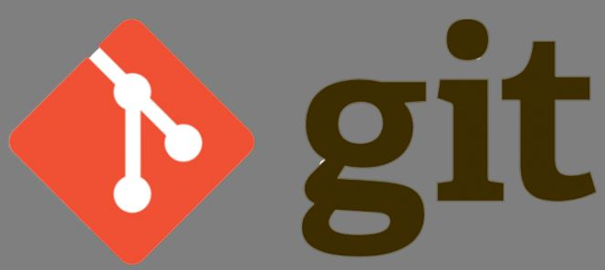

Benvenido terricola
Aqui aprenderas cómo utilizar git github
 Es um sistema de contorol de versiones
destribuido, gratuito y de codigo abierto,deseñado
para manejar todo, desde proyecto pequeño hasta
proyectos muy grandes con rapidez y eficiencia.